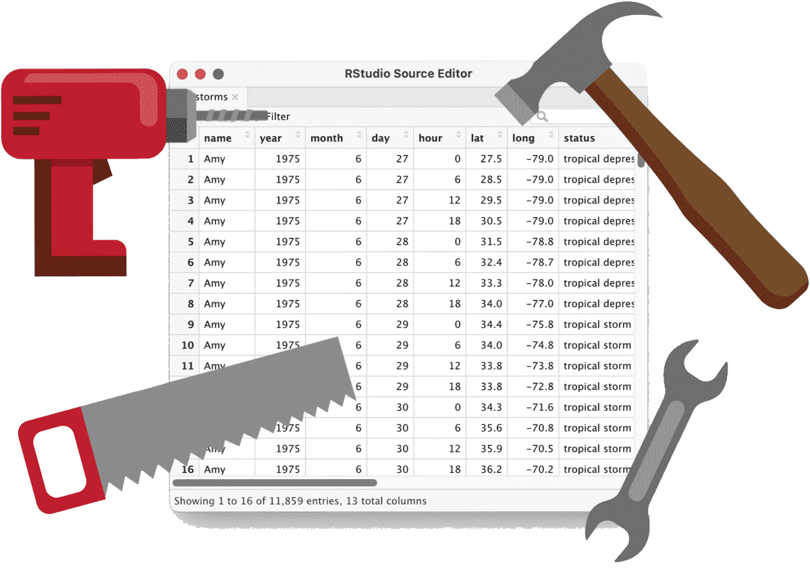

| Time | Topic | Slides and practicals |
|---|---|---|
| 13:30 — 13:40 | Recap and questions from Session 1 | |
| 13:40 — 14:10 | Using and writing functions | |
| 14:10 — 14:40 | Practical 1: functions | HTML |
| 14:40 — 14:50 | Break | |
| 14:50 — 15:35 | The tidyverse; pipesselect(), filter() and arrange() |
|
| 15:35 — 16:05 | Practical 2: first steps with dplyr |
HTML |
| 16:05 — 16:15 | Break | |
| 16:15 — 16:55 | Creating and modifying columns with mutate()Recoding with if_else() and case_when() |
|
| 16:55 — 17:00 | Wrap-up |
🐥 Session 2: Functions and data manipulation

This session starts with functions: how to use them, and how to write your own to avoid repeating code.
We then introduce the tidyverse and the pipe (|>), and use them for core data manipulation tasks: selecting, filtering and sorting data, creating new columns, and recoding existing ones.
Timetable
We’ll do Part 2 of Practical 2 (creating and recoding columns) at the start of Session 3.
Homework
After the session, try the homework: short exercises on writing functions that work with data frames.